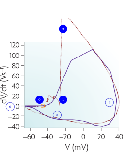
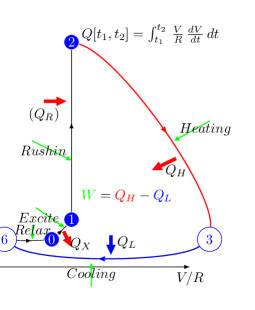
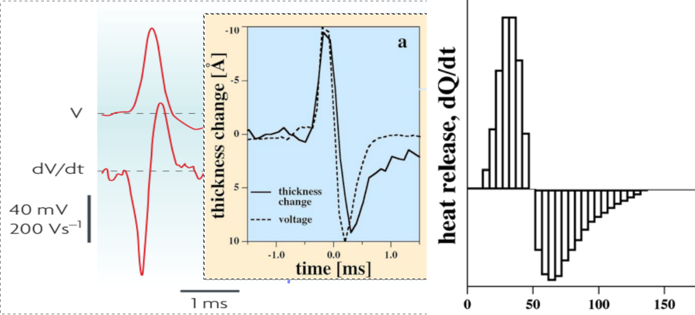

In a way demonstrating the need for the non-disciplinary discussion, we derive the thermodynamic Carnot-cycle of AP from measuring electrical parameters, calculate its energy consumption and efficiency, interpret the neuron’s partially reversible operation and the long-sought solution to the heat emission/absorption issue. We defy the claim that science cannot describe life: the underlying physics constrains biological phenomena, including cognitive ones.
As the middle inset in Fig. 2.18 shows, the sum of the rush-in and AIS gradients (plus more gradients if any) controls the generation of the AP. During excitation, energy is fed into the neuron. The rush-in of the ions injects more energy, which can be used to generate an AP. It is a kind of potential energy, which is converted in the first phase of (while the voltage gradient is positive) to the kinetic energy of AP. When the membrane potential reaches its peak, the gradient reverses, decreasing the potential. In the second phase of AP (while the voltage gradient is negative) the neuron harvests energy. At the beginning of the transient state, the size of the neuron (due to the increased electrostatic repulsion) slightly increases [65] and stores the energy mainly in the form of elastic energy. The resultant of the electrical, elastic, and thermodynamic forces moves the ions toward the AIS. Although part of the energy is dissipated while the ions exit through the AIS with their Stokes-Einstein speed, the rest of the energy (the elastic part) is recovered. The concentration and potential values change as discussed in connection with Fig. 1.9. The membrane voltage controls synapses as shown in the top inset in Fig. 2.18.
 |
 |

The ‘phase loop’ (how the voltage gradient and membrane voltage correlate; a parametric curve that uses time as parameter) shown on the left side of Fig. 2.19 represents a strong test of the theoretical line shape: the values of the potential and its gradient are simultaneously compared to the experimentally measured ones. Comparing the experimental and theoretical shapes supports the theory that describes the mutual dependence of voltage and its gradient. Furthermore, it shows that omitting the gradient from the classic theory misled the experiment designers, and the measurement design was wrong: the time interval between recording data points was too long. Where the gradient is high and changes quickly (see Fig. 2.18, middle inset), the blue experimental diagram line is roughly broken. The changes in the values are too significant, causing the integration to distort the value and resulting in an inaccurate broken line. In the rush-in region, the theoretical line is even outside the figure’s range. Where the gradient change is slow, the measurement points are sufficiently dense, and the theory perfectly describes the experimental data. Neither of the mentioned competing (or other classical) theories can interpret the phenomenon and produce any similar dependence.
An exciting aspect is that the phase plot in Fig. 2.19, left side, shows a remarkable resemblance to a specialized thermodynamic Carnot cycle in Fig. 2.19, right side; and inspires us to interpret the parameters of the ”neuronal Carnot machine” (the bent arcs serve only for illustration; they do not follow the path on the left side). As discussed in [58], a neuron emits and absorbs heat (energy) in the first and second phases, respectively, of an AP; see Fig. 2.20. The experience, alone, defies the classical HH mechanism: the leakage current can only emit heat, but not absorb it. Laws describing currents of electrons must not be used directly to currents of ions. Neglecting the repelling force between the charge carriers of the ion current, which can be omitted in the case of electron current, leads to entirely wrong conclusions, from the wrong oscillator model to losing the connection between the electrical and mechanical changes, to losing the connection between inanimate and living nature. Our theoretical model, unlike the others, can explain that observation quantitatively.
We rescale the horizontal axis by the resistance of the AIS (actually, the horizontal axis is transformed to ); thus, the plot becomes a neuronal energy density diagram. Actually, it corresponds to a usual thermodynamic diagram, and we expect that the temperature changes in the same analogy (we keep the convention of using the letter to denote both potential and volume). By integrating the parametric values of any two points on the diagram ‘circle’ line, we receive the work performed by the neuron.
We consider that the environment in the period ‘Excite’ invests energy through the neuron’s synapses (increases the membrane’s voltage to the threshold) between [0,1] to open the valves. Opening the valves enables the neuron receiving in period ‘Rushin’ energy by letting in ions, accelerated by the field across the membrane. Suddenly, the ion concentration and the membrane potential reach their maximum values (given that the current is slow, the sudden change generates a smeared and delayed current on the AIS, see Fig. 2.18, middle inset). Given that the process is instant, the potential does not change (no current flows), so the integral [1,2] evaluates to zero (an ‘iso-voltage’ transition). Now the neuron has a high potential to prepare its (already encoded) message (the AP). In terms of electricity, in the first phase (from the threshold potential to the maximum value of the AP, where is positive), the neuronal power cycle produces a positive heat , given that is always positive. In the second phase (from the top value of AP to where the driving force becomes zero again), the neuronal power cycle produces a negative heat , given that is always negative; in line with the measurement results shown in Fig. 2.20 [58]. The integral [2,3] provides the “heating” , the energy invested. Similarly, the integral [3,6] provides the “cooling” , representing the energy recovered (assuming no artificial current).
In terms of thermodynamics, the ions stop in the immediate vicinity of the membrane, i.e., initially, the pressure created by their mutual repulsion is present at the inner surface of the sphere (it is a mechanical shock wave). In the positive phase of the damped oscillation, it compresses the fluid in the sphere. In the second phase, in the negative phase of oscillation, it decompresses the fluid (sucks back the fluid). Given that the density of ions in the volume is constant (the ions’ speed is too low to follow those sudden changes), the electrical and thermodynamic quantities faithfully follow each other. Measuring electrical potential and mechanical pressure yields disciplinary measurements of the same physical effect.
In the “Relax” phase, is (almost) zero, so the corresponding integral evaluates to zero (‘iso-gradient’ transition). In this phase, the neuron must restore its resting state: by using ATP, it creates new ions. The difference in the energies of and is the net energy used to forward an AP; while is the energy used to perform the computation. The energy is an approximate value: as shown in Fig. 2.18, at the time of re-opening the synaptic inputs, the membrane can be above or below the resting potential, which actually means a neuron-level memory. In this sense, adjacent neural spikes can borrow energy from each other (which explains why the spikes in a burst behave differently). The energy is produced by the ATP hydrolysis in parallel with the ’primary processes’ described above, and the produced ions are acquired on the condenser plates, thus restoring the resting potential and providing potential energy for the forthcoming spikes.
From Fig. 2.19, after recalibration (with Ohm), one can estimate (by approximating roughly the area under the arcs by triangles, in units of ), . That is, according to the ”phase plot” [114], the neuron operates with an efficiency around 65%, and approximately 3% of the energy is derived from the upstream neurons. The values (without using data from dedicated measurements) agree excellently with the measured [34] values and 74%; furthermore, the :total ratio , derived by measuring the direct energy consumption [84]. An interesting proof that the two disciplines see the same physical effect, that electrical parameters can measure the thermodynamic efficiency. The invested energy can be safely estimated from the work the rush-in charge performs given that the energy is almost entirely stored as elastic potential energy due to the enormous elasticity modulus
The theoretical diagram line in Fig. 2.19, based on the presented correct physical model, might serve as a good starting point for interpreting entropy for neuronal operation, again in analogy with the Carnot cycle; although the charge of the ions (the macroscopic current) complicates the process. Furthermore, material convection happens in different ill-defined volume parts of the membrane in different directions. Initially, in the resting state, the ions are in a (relatively) disordered state. After the rush-in, in the dynamic layer, the ions have a highly ordered macroscopic speed (see Stokes-Einstein speed, the gradually changing gradients, and the finite speed) component toward the AIS. In the layer, the maximum ordered state is reached when the voltage drop on the AIS reaches its peak value (the current is slow). Then, the ions slow down, and at zero voltage gradient, they reach again a minimally ordered state. After that, due to the ’capacitive current’, the current reverses its direction, and the backward current again represents an ordered state. Perhaps the latter-mentioned negative contribution is the one referred to as ‘negative entropy’ when describing life in terms of thermodynamic processes? We must be aware that, in the background, energy-producing processes are at work, involving the ordered transport of material. Considering the neuron, based only on the described primary processes, would be a mistake.
The above discussion might help in understanding the physical entropy in the neuron; although, as discussed above, there are issues with calculating partial derivatives (and so: deriving entropy from the Gibbs energy of the system) and with the applicability of Boltzmann assumptions to ensembles of ions. However, the information entropy is different. As our discussion underpins, the ”information” arrives at the neuronal inputs as charge carriers, and the time course of the input currents, in cooperation with the neural environment and the neuron itself, carries the information in some form. The information is distributed in space and time [17, 29], so we can be sure that using the pulse count as a measure of neural information is wrong. We must distinguish the carrier of the information, the ion, and the information content that its temporal appearance carries. After having the correct physical model of operation, we have a chance to gain more knowledge about how the information is encoded in the spatially and temporally distributed observable signals; furthermore, we have greater hope of understanding neural information processing, including the brain’s entropy handling.